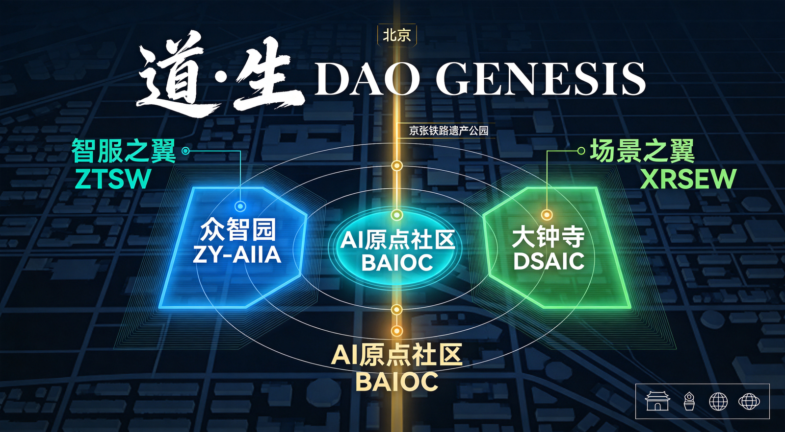
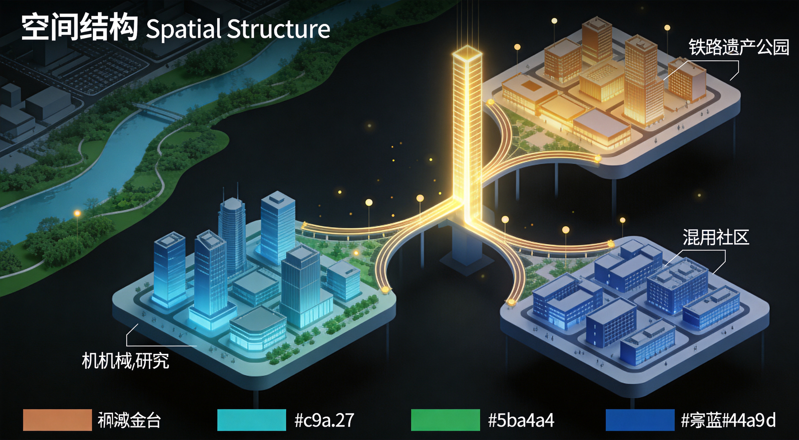
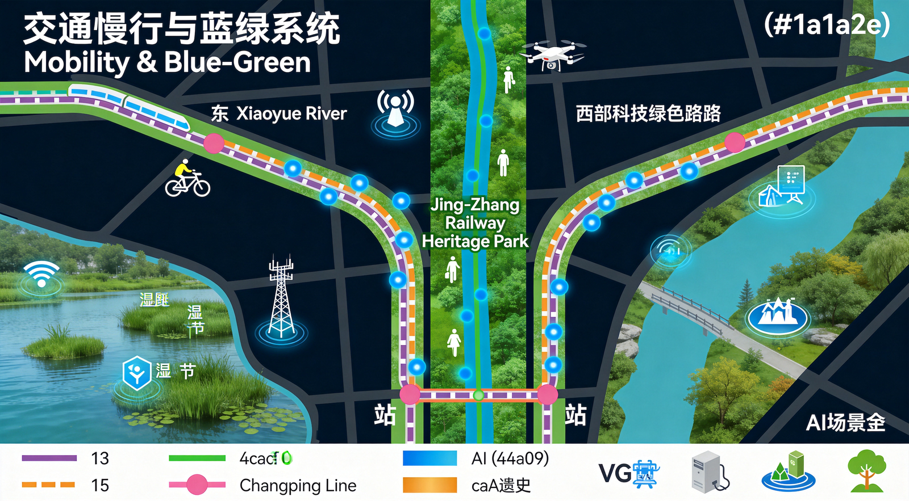
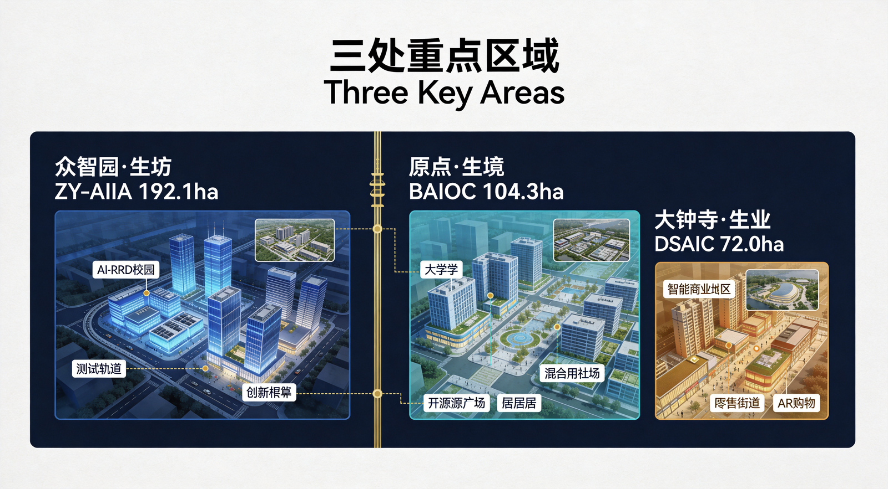
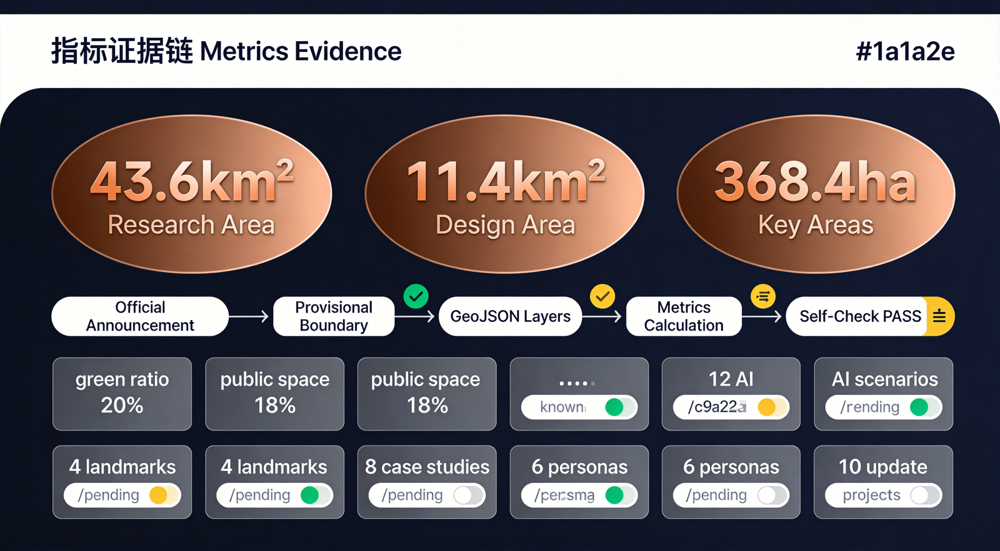

道·生 DAO GENESIS
以《道德经》"道生一，一生二，二生三，三生万物"为元逻辑，将京张铁路百年自主创新之道映射为AI原生城市的空间生成法则，提出"一脉·两翼·三区·万物"的空间结构与全球首个AI开源文明试验场概念。

一、核心概念：道·生
1.1 为什么是"道"
"道"在本方案中承载三重历史语义：
第一重：铁路之道（1909）——1909年，詹天佑主持修建京张铁路，以"人字形线路"破解陡坡难题，开辟了中国自主工程之道。
第二重：创新之道（1980-2020）——从中关村电子一条街到国家自主创新示范区，海淀走出了中国科技创新之道。
第三重：智能之道（2020-未来）——当AI从工具进化为基础设施，一条新的"道"正在浮现。
1.2 空间生成模型
| 道家原文 | 空间映射 | 具体指代 |
|---|---|---|
| 道 | 创新之脉 | 京张铁路遗址公园 |
| 一 | 统一体 | 百年京张AI创新带 |
| 二 | 两翼协同 | 中关村科技服务翼 + 小月河场景赋能翼 |
| 三 | 三区联动 | 众智园 + AI原点社区 + 大钟寺 |
| 万物 | 无限可能 | AI场景×公共空间×文化体验 |
1.3 命名体系
| 层级 | 中文名称 | 英文名称 | 含义 |
|---|---|---|---|
| 总体品牌 | 道·生 | DAO GENESIS | 道生万物的创新生成 |
| 众智园 | 众智·生坊 | The Forge | AI全栈创新的锻造场 |
| AI原点社区 | 原点·生境 | The Origin Habitat | AI原初生态的栖息地 |
| 大钟寺 | 大钟寺·生业 | Smart Commerce | 智能原生新业态试验场 |
| 旗舰活动 | 道·生节 | DAO GENESIS Festival | 全球AI创新者年度朝圣 |
二、三层范围工作框架
2.1 统筹研究范围 43.6 km²
北至北五环路，东至京藏高速，南至西直门外大街，西至万泉河路。研究世界级AI创新生态体系的宏观格局。
2.2 总体设计范围 11.4 km²
以京张遗址公园周边1-2公里的城市地区和产业区为规划设计范围。达到控制性详细规划深度的城市设计。
2.3 重点区域范围 368.4 ha
| 重点区 | 面积 | 定位 |
|---|---|---|
| 众智园AI自主创新加速区 | 192.1公顷 | AI全栈创新体系与AI治理话语权 |
| 北京AI原点社区 | 104.3公顷 | 世界级AI创新生态 |
| 大钟寺AI产业聚集区 | 72.0公顷 | 智能原生新业态 |

三、统筹研究范围：产业与未来城市研究
3.1 三大定位与五大功能
三大定位 → 道的三重语义：百年京张文化带（铁路之道）、都市AI生活体验带（生活之道）、AI融合创新带（智能之道）。
五大功能 → 生的五层展开：AI全栈自主创新体系（生技术）、世界级AI创新生态（生生态）、AI+场景赋能新范式（生场景）、智能化AI活力城市（生生活）、AI治理全球话语权（生规则）。
3.2 三区两翼协同回路
智服之翼（中关村科技服务翼）：要素全球化配置、中关村IP与资本赋能、技术转移与成果转化。
场景之翼（小月河场景赋能翼）：AI场景赋能与智能化AI活力城市、公共体验路径。
协同回路：智服之翼输入资源 → 三区消化转化 → 场景之翼输出体验 → 反馈回智服之翼形成闭环。
3.3 全球AI创新生态案例研究
案例1：巴塞罗那 22@ 创新区
从工业纺织区转型为知识经济创新区（198公顷）。核心：混合用地、超级街区、可负担住房配建。启示：大钟寺可借鉴工业用地更新与社区共生。
案例2：新加坡纬壹科技城
200公顷产学研一体化科技城。核心：政府主导+国际竞赛+一体化规划。启示：众智园可借鉴"一个园区、多个群落"空间组织。
案例3：首尔数字媒体城
343公顷，垃圾填埋场→数字内容中心。核心：韩流+科技融合。启示：AI+文化内容可成为特色方向。
案例4：多伦多-滑铁卢AI走廊
90公里走廊，集聚Vector Institute等。核心：大学→人才→企业→初创。启示：AI原点社区与高校关系可借鉴。
案例5：深圳南山科技园
硬件+软件全栈创新中心。核心：市场化驱动+多层次空间。启示：众智园应保留多档次空间。
案例6：伦敦King's Cross
27公顷铁路货场→知识枢纽。核心：铁路遗产活化+公共空间先行。启示：京张遗址公园可直接借鉴。
案例7：波士顿Kendall Square
MIT所在2.4km²，全球创新密度最高。核心：大学开放创新+步行圈生态。启示：AI原点社区应追求创新密度。
案例8：横滨港未来21
76公顷填海造地。核心：30年分期+地下共同沟。启示：一带可借鉴"基础设施先行、功能逐步填充"。
四、总体设计范围：城市更新与控规深度城市设计
4.1 空间结构："一脉·两翼·三区·万物"
一脉：京张铁路遗址公园南北纵贯，创新带的物理主轴和文化脊梁。
两翼：西翼（智服之翼）承担资本、IP、技术转移；东翼（场景之翼）承担场景试验、公共体验。
三区：众智园（北）、AI原点社区（中）、大钟寺（南）沿一脉差异化布局。
万物节点：AI场景节点、公共空间、朝圣地标共同构成"万物"层面。

4.2 用地布局概念
| 功能类型 | 概念比例 | 主要分布 |
|---|---|---|
| 产业研发 | 30-35% | 众智园、大钟寺 |
| 商业服务 | 15-20% | 大钟寺、AI原点社区 |
| 教育科研 | 10-15% | AI原点社区 |
| 公共空间 | 18-23% | 全域（京张遗址公园沿线） |
| 居住配套 | 10-15% | AI原点社区、两翼 |
| 绿地水系 | 15-20% | 小月河翼、遗址公园 |
4.3 城市更新框架
"织补而非推倒"——以京张铁路遗址公园为缝合线，织补东西两侧被铁路历史分割的城市肌体。
保留提升类（清华同方科技园等）、功能转换类（老旧厂房→AI场景空间）、活化利用类（京张铁路遗址）、概念新建类（朝圣地标等）。
五、重点区域详细设计
5.1 众智园（众智·生坊）
面积约192.1公顷。空间结构："一轴三环多节点"。功能：AI产业测试验证集群（北）、全栈研发集群（中）、加速转化集群（南）。
5.2 AI原点社区（原点·生境）
面积约104.3公顷。空间结构："一核两带五社区"。核心：AI开源广场。文化地标："开源碑林"。
5.3 大钟寺（大钟寺·生业）
面积约72.0公顷。空间结构："一街两坊"。AI智能商业街+智能消费坊+智能商务坊。概念建议空中连廊实现东西缝合。

六、AI场景与人才画像
6.1 用户画像
| 画像 | 核心需求 | 主要空间 |
|---|---|---|
| AI研究者 | 算力、数据集、学术交流 | AI原点社区、众智园 |
| AI创业者 | 融资、孵化、市场对接 | 众智园、大钟寺 |
| 开发者 | 开源社区、测试环境 | AI原点社区 |
| 城市居民 | 便捷服务、健康、教育 | 全域 |
| 国际访客 | 文化体验、商务对接 | AI原点社区、大钟寺 |
| 规划决策者 | 数据可视化、模拟推演 | 全域 |
6.2 AI场景卡（精选）
共12个AI场景卡，全部包含隐私边界定义和人工复核机制。
七、蓝绿空间与朝圣地标
7.1 京张遗址公园活力带
北段"测试之路"、中段"开源之路"、南段"未来之路"。打造"全球最长的AI公共空间实验场"。
7.2 四大朝圣地标
地标1：道·生之门（DAO Gate）
位置：遗址公园北入口。铁路钢轨和数字光纤交织构成的门户雕塑。
地标2：万物流（Myriad Flow）
位置：AI原点社区核心广场。AI驱动的动态公共艺术装置。
地标3：开源碑林（Open Source Stele Forest）
位置：AI原点社区沿京张遗址公园。实体石碑+数字屏幕记录全球开源贡献者。
地标4：人字纪（Y-Line Monument）
位置：五道口附近。以詹天佑"人字形线路"为原型的地面装置。
八、文化融合叙事
第一代·铁路之道（1909-1949）：詹天佑，自主创新的勇气。空间载体：京张铁路遗址。
第二代·创新之道（1980-2020）：中关村电子一条街→国家自主创新示范区。
第三代·智能之道（2020-未来）：大模型时代、AI原生城市、开源全球化。
国际传播线："From Railway to AI: A Century of Chinese Innovation"
九、更新项目与分期
9.1 更新项目清单
| 编号 | 项目名称 | 类型 |
|---|---|---|
| UP-001 | 京张遗址公园AI展示带 | 活化利用 |
| UP-002 | 众智园产业测试验证集群 | 功能转换 |
| UP-003 | AI原点社区开源广场 | 概念新建 |
| UP-004 | 开源碑林 | 概念新建 |
| UP-005 | 大钟寺AI智能商业街 | 保留提升+改造 |
| UP-006 | 东西缝合连廊 | 概念新建 |
| UP-007 | 小月河蓝绿慢行系统 | 生态提升 |
| UP-008 | 道·生之门地标 | 概念新建 |
| UP-009 | 万物流艺术装置 | 概念新建 |
| UP-010 | 人字纪纪念装置 | 概念新建 |
9.2 分期概念
| 时期 | 年份 | 核心项目 |
|---|---|---|
| 奠基期 | 2026-2028 | 遗址公园AI展示带一期、开源广场启动、慢行系统一期 |
| 成长期 | 2028-2030 | 产业测试集群一期、大钟寺改造、朝圣地标建设 |
| 成熟期 | 2030-2035 | 全域AI场景全覆盖、东西缝合通道、品牌全球影响力 |
十、核心指标

| 指标 | 数值 | 状态 |
|---|---|---|
| 统筹研究范围面积 | 43.6 km² | 已知 |
| 总体设计范围面积 | 11.4 km² | 已知 |
| 重点区域总面积 | 368.4 ha | 已知 |
| 概念绿地比例 | 20% | 概念 |
| 概念公共空间比例 | 18% | 概念 |
| AI场景节点数 | 12 | 已知 |
| 朝圣地标数 | 4 | 已知 |
| 更新项目数 | 10 | 已知 |
十一、合规与风险
待补资料清单
- 官方精确红线（GIS/CAD格式）
- 正式控规条件（容积率、建筑高度、建筑密度）
- 现状建筑权属数据
- 市政设施容量数据